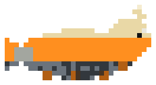
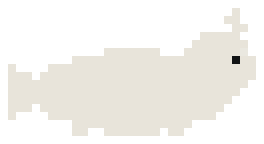

Brand book · Salvage Yard
Tag it, strip it, ship it.
What we are
MudPuppy documents what an application actually does today, before anyone migrates it. It observes the running app, records evidence, and turns that evidence into business-analysis documentation. Every statement points back to what was seen.
Legacy developers, BAs and QAs on enterprise portal migrations, who spend all day in tools like Sitecore or AEM and use an AI harness to do the walking. People who read evidence for hours.
A salvage yard. The old portal is the lot; screens are parts; records are tags; the to-be is a blueprint drawn over the parts; people's notes are typed on the tags. Nothing is thrown away until someone decides.
Personality
Shows what was observed, marks what was guessed, never fills a gap with a guess.
A tool on a workbench, not a showroom. Dense, square, labelled.
One yard joke per screen at most, and never in an error or a number.
Dark steel, warm chalk text, no glow over data, no motion you didn't ask for.
Wordmark
Mark

Creature · 24–63px
One colourColour
Type
Graphic devices
Voice
- Say
- portal, scan, screen, process, record, amendment, revision, environment, as-is, to-be
- Yard words, sparingly
- parts, lot, tag, scrapped, salvage, drawing, inventory
- Never
- magic, AI-powered, seamless, oops, emoji in product UI